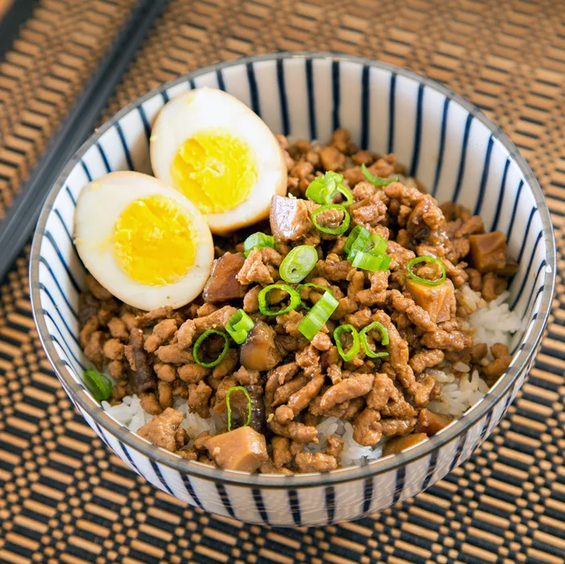

Minced Pork Rice
🎥 Video Tutorial (klik untuk tampil/sembunyi)
🍚 Bahan Utama (klik untuk tampil/sembunyi)
- 300 g daging babi cincang (daging + sedikit lemak)
- 2 siung bawang putih, cincang
- 4 butir bawang merah, iris tipis
- 2 sdm kecap asin
- 1 sdm kecap manis Taiwan (atau kecap manis biasa)
- 1 sdm saus tiram
- 1/2 sdt gula merah
- 1/2 sdt lada
- 1–2 butir telur rebus (opsional)
- 2 sdm minyak goreng
- 1 lembar daun salam kering Cina (bay leaf)
- 1/2 sdt bubuk five-spice (opsional)
- 2 siung bawang putih, cincang
- 4 butir bawang merah, iris tipis
- 2 sdm kecap asin
- 1 sdm kecap manis Taiwan (atau kecap manis biasa)
- 1 sdm saus tiram
- 1/2 sdt gula merah
- 1/2 sdt lada
- 1–2 butir telur rebus (opsional)
- 2 sdm minyak goreng
🌿 Rempah Tambahan (opsional tapi autentik)
- 1 bunga lawang (star anise)- 1 lembar daun salam kering Cina (bay leaf)
- 1/2 sdt bubuk five-spice (opsional)
🥣 Kuah Kaldu
- 300–400 ml air atau kaldu ayam📋 Instruksi Memasak (klik untuk tampil/sembunyi)
👩🍳 Cara Membuat
- Tumis bawang merah dan bawang putih hingga harum dan kecokelatan.
- Masukkan daging babi cincang, tumis hingga berubah warna dan keluar minyaknya.
- Tambahkan kecap asin, kecap manis, saus tiram, gula, lada, dan rempah (jika pakai).
- Tuang air/kaldu, masak kecil selama 30–40 menit hingga kuah mengental dan meresap.
- Masukkan telur rebus ke kuah bila ingin versi lengkap.
🍽️ Penyajian
- Tuang daging dan kuahnya di atas nasi putih hangat.
- Sajikan dengan acar lobak, sayur rebus, atau telur rebus.
✅ Tips
- Untuk versi halal, ganti daging babi dengan daging sapi cincang atau ayam paha cincang.
- Simpan daging lu rou dalam kulkas hingga 3 hari — cocok untuk meal prep!
- Tumis bawang merah dan bawang putih hingga harum dan kecokelatan.
- Masukkan daging babi cincang, tumis hingga berubah warna dan keluar minyaknya.
- Tambahkan kecap asin, kecap manis, saus tiram, gula, lada, dan rempah (jika pakai).
- Tuang air/kaldu, masak kecil selama 30–40 menit hingga kuah mengental dan meresap.
- Masukkan telur rebus ke kuah bila ingin versi lengkap.
🍽️ Penyajian
- Tuang daging dan kuahnya di atas nasi putih hangat.
- Sajikan dengan acar lobak, sayur rebus, atau telur rebus.
✅ Tips
- Untuk versi halal, ganti daging babi dengan daging sapi cincang atau ayam paha cincang.
- Simpan daging lu rou dalam kulkas hingga 3 hari — cocok untuk meal prep!